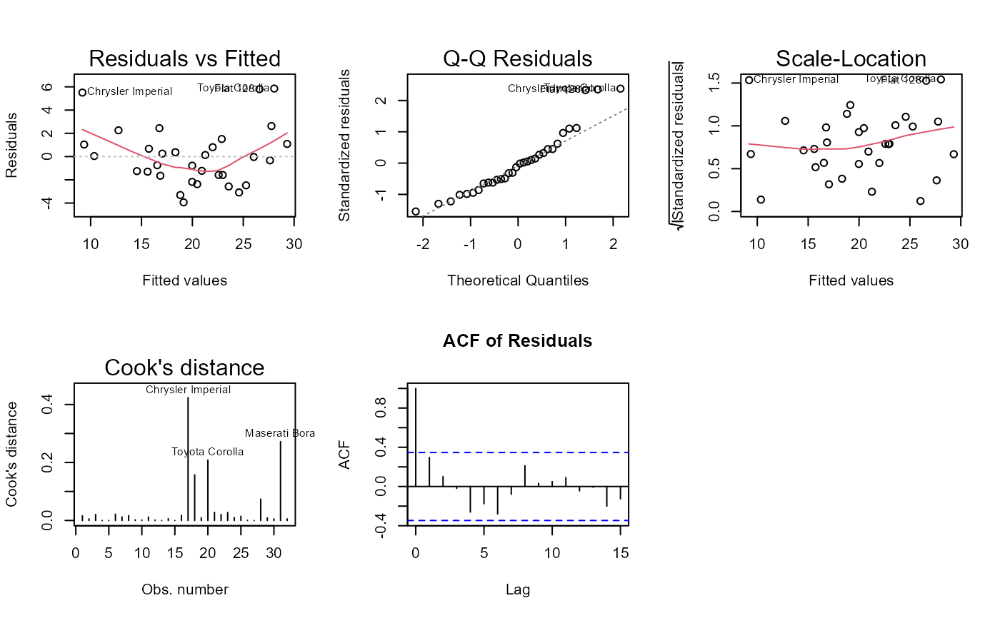

This is a generic function for performing diagnostic checks on statistical models. It dispatches to specific methods based on the model type.
Usage
# S3 method for class 'glm'
diagnose_model(model, ...)
# S3 method for class 'lm'
diagnose_model(model, ...)
# S3 method for class 'coxph'
diagnose_model(model, ...)
diagnose_model(model, ...)Examples
# Linear model diagnostics
model_lm <- lm(mpg ~ wt + hp, data = mtcars)
diag_lm <- diagnose_model(model_lm)
summary(diag_lm)
#> -- Model Diagnostics Summary ---------------------------------------------------
#>
#> -- multicollinearity --
#>
#> -- Variance inflation factors
#>
#> wt hp
#> 1.766625 1.766625
#> -- VIF severity by predictor:
#>
#> wt hp
#> "Negligible" "Negligible"
#> -- Severity legend:
#> * < 2 : Negligible
#> * 2 - 5 : Moderate
#> * 5 - 10 : High
#> * >= 10 : Severe
#>
#> -- heteroskedasticity --
#>
#> p-value: 0.6438038
#> Residual variance appears approximately constant.
#>
#> -- autocorrelation --
#>
#> p-value: 0.02061255
#> Residuals appear autocorrelated; consider time-series adjustments.
#>
#> -- linearity --
#>
#> p-value: 0.0007226153
#> Evidence against linearity in the model; consider adding nonlinear terms or transformations.
#>
#> -- normality --
#>
#> p-value: 0.03427476
#> Residuals deviate from normality; check model assumptions.
#>
#> -- outliers --
#>
#> Number of influential points: 4
#> Influential observations: Chrysler Imperial, Fiat 128, Toyota Corolla, Maserati Bora
#> Cook's distances for influential observations:
#> Chrysler Imperial Fiat 128 Toyota Corolla Maserati Bora
#> 0.4236109 0.1574263 0.2083933 0.2720397
#> 4 influential observation(s) detected. Influential observations have Cook's distance above 4/n. Review these cases for leverage, data entry issues, or model fit problems.
#>
plot(diag_lm)

# Logistic regression diagnostics
model_glm <- glm(am ~ wt + hp, data = mtcars, family = binomial)
diag_glm <- diagnose_model(model_glm)
summary(diag_glm)
#> -- Model Diagnostics Summary ---------------------------------------------------
#>
#> -- multicollinearity --
#>
#> -- Variance inflation factors
#>
#> wt hp
#> 2.444297 2.444297
#> -- VIF severity by predictor:
#>
#> wt hp
#> "Moderate" "Moderate"
#> -- Severity legend:
#> * < 2 : Negligible
#> * 2 - 5 : Moderate
#> * 5 - 10 : High
#> * >= 10 : Severe
#>
#> -- linearity_logit --
#>
#> MLE of lambda Score Statistic (t) Pr(>|t|)
#> wt -0.088743 2.2318 0.03412 *
#> hp 3.205811 0.8980 0.37711
#> ---
#> Signif. codes: 0 '***' 0.001 '**' 0.01 '*' 0.05 '.' 0.1 ' ' 1
#>
#> iterations = 13
#>
#> Score test for null hypothesis that all lambdas = 1:
#> F = 3.6654, df = 2 and 27, Pr(>F) = 0.03905
#>
#>
#> -- goodness_of_fit --
#>
#> p-value: 0.6716511
#> Model fit appears adequate.
#>
#> -- influential_observations --
#>
#> Number of influential points: 2
#> Influential observations: Mazda RX4 Wag, Toyota Corona
#> Cook's distances for influential observations:
#> Mazda RX4 Wag Toyota Corona
#> 0.2034041 0.7917908
#> 2 influential observation(s) detected. Influential observations have Cook's distance above 4/n. Review these cases for leverage, data entry issues, or model fit problems.
#>
#> -- separation_issues --
#>
#> No separation issues detected.
#>
# Poisson regression diagnostics
model_pois <- glm(carb ~ wt + hp, data = mtcars, family = poisson)
diag_pois <- diagnose_model(model_pois)
summary(diag_pois)
#> -- Model Diagnostics Summary ---------------------------------------------------
#>
#> -- multicollinearity --
#>
#> -- Variance inflation factors
#>
#> wt hp
#> 1.401553 1.401553
#> -- VIF severity by predictor:
#>
#> wt hp
#> "Negligible" "Negligible"
#> -- Severity legend:
#> * < 2 : Negligible
#> * 2 - 5 : Moderate
#> * 5 - 10 : High
#> * >= 10 : Severe
#>
#> -- overdispersion --
#>
#> Residual deviance: 12.27804
#> Degrees of freedom: 29
#> Ratio: 0.4233806
#> [OK] No evidence of overdispersion.
#>
#> -- zero_inflation --
#>
#> Observed zeros: 0 ( 0 %)
#> Expected zeros: 3 ( 9.3 %)
#> [OK] No evidence of zero-inflation.
#>
#> -- influential_observations --
#>
#> Number of influential points: 0
#> No observations exceed the influence threshold.
#> No influential observations detected. Influential observations have Cook's distance above 4/n. Review these cases for leverage, data entry issues, or model fit problems.
#>
#> -- residual_analysis --
#>
#> Mean residual: -0.04200633
#> SD residual: 0.6278888
#> Min residual: -0.8656074
#> Max residual: 1.497036
#>
# Cox proportional hazards diagnostics
library(survival)
data(lung)
#> Warning: data set 'lung' not found
model_cox <- coxph(Surv(time, status) ~ age + sex + ph.ecog, data = lung)
diag_cox <- diagnose_model(model_cox)
summary(diag_cox)
#> -- Model Diagnostics Summary ---------------------------------------------------
#>
#> -- multicollinearity --
#>
#> VIF not applicable to Cox models (no intercept).
#>
#> -- proportional_hazards --
#>
#> Global test p-value: 0.2155549
#> chisq df p
#> age 0.1879877 1 0.6645968
#> sex 2.3054372 1 0.1289220
#> ph.ecog 2.0542488 1 0.1517821
#> GLOBAL 4.4636576 3 0.2155549
#> Proportional hazards assumption appears reasonable.
#>
#> -- influential_observations --
#>
#> Number of influential points: 10
#> Influential observations: 3, 6, 17, 32, 36, 37, 70, 84, 88, 128
#> Max |dfbeta| for influential observations:
#> 3 6 18 33 37 38 71 85
#> 0.2103167 0.4334764 0.3724475 0.2236608 0.5149764 0.2628997 0.2410623 0.4614677
#> 89 129
#> 0.2431150 0.2057780
#> Influential observations have |dfbeta| > 0.2 for at least one coefficient. Review these cases.
#>
#> -- functional_form --
#>
#> Functional form check: Review plots of martingale residuals vs predictors for nonlinearity.
#>